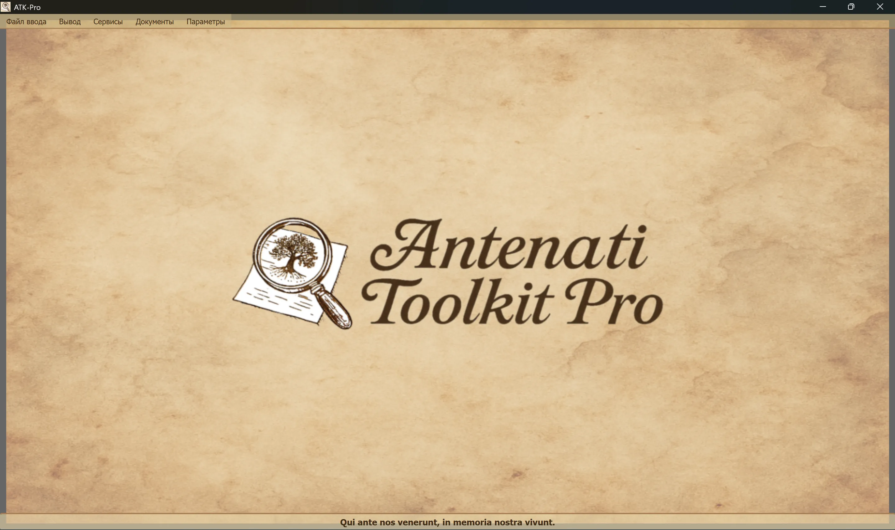

────────────────────────────────────────────────────────────────────────────────
Windows
ATK-Pro-Setup-vx.x.x.exe Официальный сайт ReleaseLinux
ATK-Pro-vx.x.x.deb (Debian/Ubuntu) .tar.gz со страницы выпускаsudo dpkg -i ATK-Pro-vx.x.x.debили дважды щёлкните файл в Nautilus/Files./ATK-Pro Из извлеченной папкиmacOS
ATK-Pro-vx.x.x.dmg со страницы выпускаWindows
C:\Program Files\ATK-Pro\C:\Users\[TuoNome]\Documents\ATK-Pro\output\C:\Users\[TuoNome]\Documents\ATK-Pro\input\Linux
/opt/ATK-Pro/ (deb) или извлеченная папка (.tar.gz)~/Documents/ATK-Pro/output/~/Documents/ATK-Pro/input/macOS
/Applications/ATK-Pro.app~/Documents/ATK-Pro/output/~/Documents/ATK-Pro/input/────────────────────────────────────────────────────────────────────────────────
Доступными языками являются:
Согласно данным, полученным в конце 2025 года, она сможет охватить около 98% потомков итальянцев и итальянских или итальянских общин, разбросанных по всему миру.
При первом запуске программа автоматически создает следующие папки:
C:\Users\[TuoNome]\Documents\ATK-Pro\output\C:\Users\[TuoNome]\Documents\ATK-Pro\output\doc\ (документы по умолчанию)C:\Users\[TuoNome]\Documents\ATK-Pro\output\reg\ (регистр по умолчанию)~/Documents/ATK-Pro/output/input\ аналоговый (опциональный, для ввода файла)При обработке временные папки создаются для скачанной плитки (tiles_canvas_X/) и, при необходимости, PDF, временные файлы для его генерации.
Все временные папки и файлы автоматически удаляются по окончании обработки.
Остаются только обработанные окончательные файлы (изображения в выбранных форматах, PDF, манифесты и метаданные).
Для изменения выходных папок используйте меню → Настройки → «Выбрать выходные папки». Выбор хранится и автоматически восстанавливается до следующего сеанса.
Командование Настройки → Профиль ресурса регулирует параллелизм, используемый при загрузке, реконструкции изображения и генерации PDF:
Профиль не изменяет качество, права или количество приобретенных документов. Конкретные пруденциальные пределы портала по-прежнему имеют приоритет.
────────────────────────────────────────────────────────────────────────────────
Главное окно Antenati Toolkit Pro имеет простую и интуитивно понятную структуру.

Латинский девиз «Qui ante nos venerunt, in memory of our vivunt» напоминает о важности корней и коллективной памяти.
В верхней части окна, под головой:
[Ввод файла] [Выпуск] [Услуги] [Документы] [Настройки]
Каждое меню содержит определенные кнопки и опции (см. следующий раздел).
Управляет загрузкой записей IIIF:
├─ Esempio input
│ └─ Visualizza il file di esempio (mostra formato coppie: modalità D/R + URL)
├─ Apri input
│ └─ Seleziona un file .txt con i tuoi record IIIF
│ (Deve contenere coppie: modalità D/R su riga 1, URL su riga 2)
└─ Modifica input
└─ Modifica il file input attualmente caricato
(Aggiungi/rimuovi record, cambia URL, salva modifiche)
Управляет обработкой и выводом:
├─ Elabora │ └─ Avvia il download, la ricostruzione e il salvataggio delle immagini │ (Mostra finestra di progresso in tempo reale) ├─ Apri cartella output │ └─ Apre in Esplora Risorse la cartella con i file elaborati └─ Visualizza elaborazioni precedenti └─ Lista dei record già elaborati
Перечень комплексных услуг:
├─ Ricerca assistita AI │ └─ Suggerisce portali, piste di ricerca e query genealogiche da verificare ├─ Visualizzazione Immagini │ └─ Viewer immagini scaricate e/o PDF generati ├─ Visualizzazione Metadati JSON │ └─ JSON originali e metadati (genealogici, tecnici, EXIF) ├─ OCR Avanzato │ └─ Testi manoscritti ottocenteschi, latino ecclesiastico, tardo-medievali ├─ Traduzione OCR │ └─ Traduzione automatica testi estratti nelle lingue selezionate └─ Esportazione GEDCOM └─ GEDCOM, Gramps, Family Tree Maker, Ancestry, MyHeritage, WikiTree, etc.
Доступ к ресурсам и документации:
├─ Disclaimer - Clausole legali e termini d'uso ├─ Presentazione autore - Background dell'autore del progetto ├─ Presentazione progetto - Storia, motivazioni, roadmap di ATK-Pro ├─ Guida - Indice principale della guida modulare └─ Informazioni - Versione, copyright, email di contatto
Общая конфигурация программы:
├─ Cambia lingua
│ └─ Seleziona la lingua dell'interfaccia (richiede riavvio)
├─ Seleziona formati immagine
│ └─ Scegli tra PNG, JPG, TIFF e PDF (almeno 1 obbligatorio)
│ PDF può essere selezionato da solo o insieme ai formati immagine
│ La scelta viene memorizzata e pre-selezionata automaticamente alla sessione successiva
├─ Seleziona cartelle output
│ └─ Apre prima la scelta della modalità cartelle, poi le finestre di selezione:
│ • Cartella unica per tutti → una sola cartella per documenti e registri
│ • Cartelle separate doc/reg → una cartella per tutti i doc, una per tutti i reg
│ • Cartella per ogni record → una cartella distinta per ciascun record
│ La modalità e le cartelle vengono memorizzate e ripristinate alla sessione successiva
├─ Esporta configurazione
│ └─ Salva le impostazioni attuali in un file
├─ Importa configurazione
│ └─ Carica un file di impostazioni precedentemente salvato (ripristina tutte le preferenze e percorsi)
├─ Verifica aggiornamenti
│ └─ Controlla la disponibilità di nuove versioni del programma
└─ Chiudi
└─ Termina il programma (mostra banner di supporto PayPal.me)
────────────────────────────────────────────────────────────────────────────────
ATK-Pro доступен на 20 языках:
Язык может быть изменен в любое время с помощью меню → Настройки → Язык изменений.
Программа требует перезагрузки для применения нового языка.
При перезагрузке программа автоматически загружает новый выбранный язык.
Изменение языка переводится:
Если модель по умолчанию выведена из эксплуатации или больше недоступна, ATK-Pro запрашивает каталог, доступный для учетных данных, выбирает модель общего назначения, совместимую с функцией и при необходимости с изображениями, и пробует до трех альтернатив. Резервный выбор не включается при ошибках квоты, сети или аутентификации.
Переопределение модели: модель, указанная вручную, остается обязательной и никогда не заменяется автоматически.